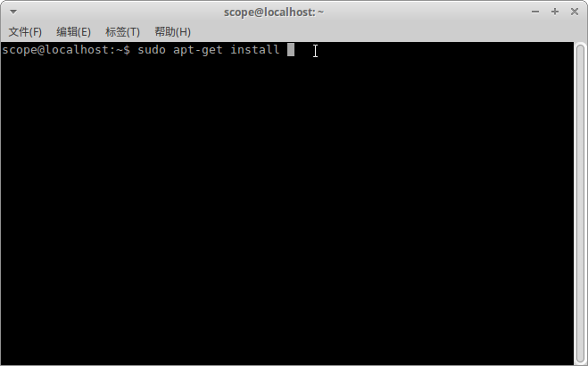
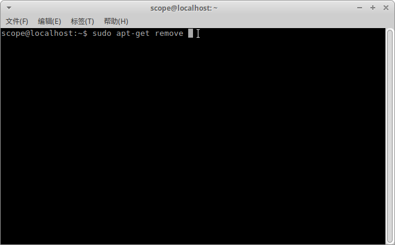
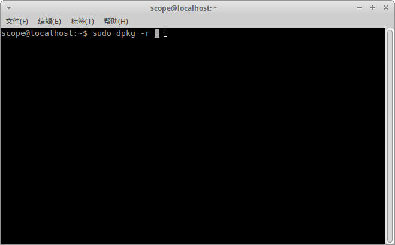

4. 虚谷号的软件安装¶
虚谷号的软件安装方式，和普通的ubuntu电脑完全一致，可以使用apt或者apt-get命令安装。
4.1. 软件安装方法¶
1、APT方式
（1）普通安装：sudo apt-get install softname1 softname2 …;
（2）修复安装：sudo apt-get -f install softname1 softname2… ;(-f Atemp to correct broken dependencies)
（3）重新安装：sudo apt-get –reinstall install softname1 softname2…;
2、Dpkg方式
（1）普通安装：sudo dpkg -i package_name.deb
3、源码安装（.tar、tar.gz、tar.bz2、tar.Z）
首先解压缩源码压缩包然后通过tar命令来完成
a．解xx.tar.gz：tar zxf xx.tar.gz
b．解xx.tar.Z：tar zxf xx.tar.Z
c．解xx.tgz：tar zxf xx.tgz
d．解xx.bz2：bunzip2 xx.bz2
e．解xx.tar：tar xf xx.tar
然后进入到解压出的目录中，建议先读一下README之类的说明文件，因为此时不同源代码包或者预编译包可能存在差异，然后建议使用ls -F –color或者ls -F命令（实际上我的只需要 l 命令即可）查看一下可执行文件，可执行文件会以*号的尾部标志。
- 一般依次执行
/configure
make
sudo make install
即可完成安装。
软件包的卸载方法¶
1、APT方式
（1）移除式卸载：sudo apt-get remove softname1 softname2 …;（移除软件包，当包尾部有+时，意为安装）
（2）清除式卸载 ：sudo apt-get –purge remove softname1 softname2…;(同时清除配置)
清除式卸载：sudo apt-get purge sofname1 softname2…;(同上，也清除配置文件)
2、Dpkg方式
（1）移除式卸载：sudo dpkg -r pkg1 pkg2 …;
（2）清除式卸载：sudo dpkg -P pkg1 pkg2…;
注： sudo密码为scope